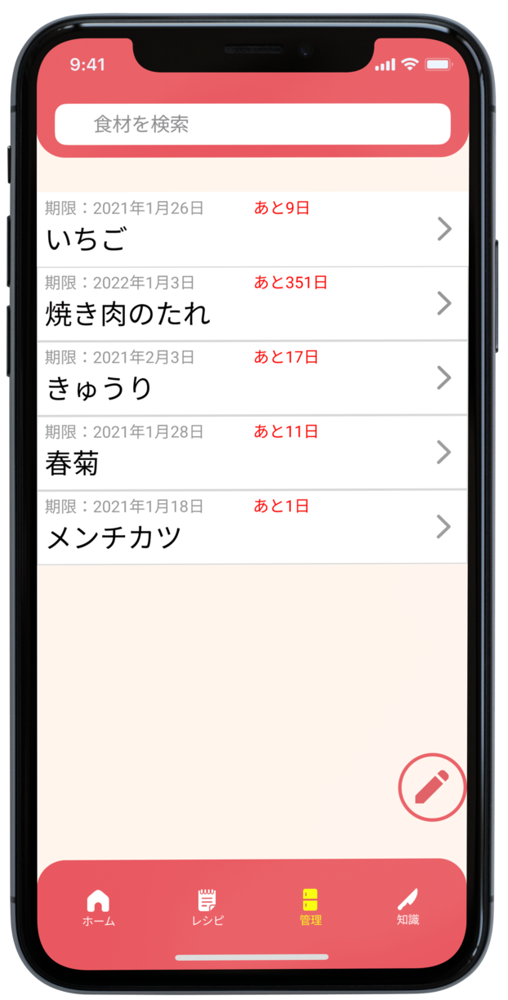
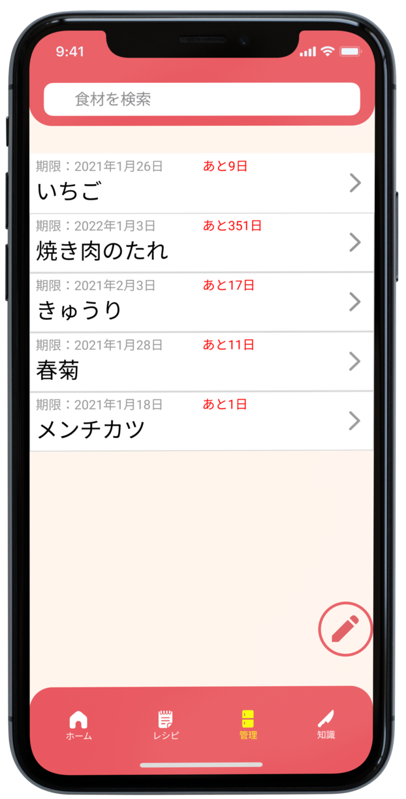
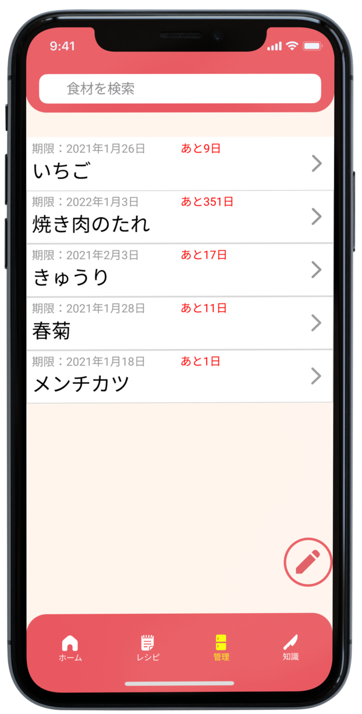
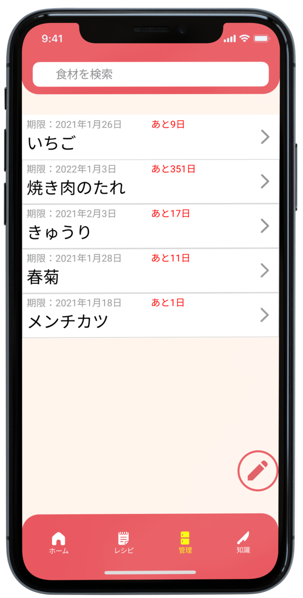

 

テーマ： ウェブサイト制作を制作する際に上手な余白の使い方を参照することができるスマホサイト
ターゲット： デザイナー
制作期間： 一ヵ月
解決する問題： サイト制作をする際に、上手な余白の使い方を理解できる
仕様ツール・言語： HTML, CSS, Adobeillustrator
フォント： フォントは読みやすく、すっきりとした明朝体が一番適していると考え、明朝体ベースのフリーフォントを使用した。
デザイナーがサイトのレイアウトを考えている際に、ハンドブックのような感覚で余白の使い方の例やテクニックなどを参照できるようなサイトを目指して作った。
デザイナー向けなので、比較的軽めの内容にし、余白に関する説明やコードなども簡単なものだけで作り上げるようにこだわった。
ウェブサイトに関する余白だけでなく、絵画や料理など、一見関係ないように思えるものの余白に関する情報も加えることで、レイアウトを考える際のヒントになることを期待した。
レスポンシブなので、PCでも表示することができる。